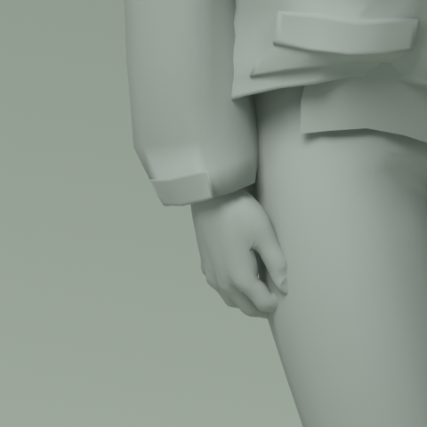
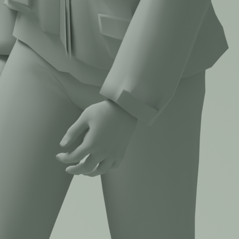
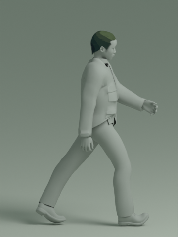
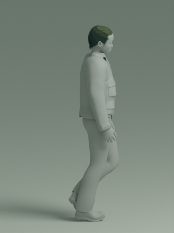

原始记录 → 目标骨架 → 实际变形
正在读取动作…
已撤回：最低鞋底点不能证明支撑脚贴地；请参阅脚部接触复核。
这一步已经核对的事情
从保存重开的模型重新测量全部 48 帧，膝与肘的屈伸保持原始记录，近乎伸直时也沿原始关节轴检查方向。目标模型的分段骨骼共用完整肢段的变换，保留静止姿态中的连接与体积。
地面只做一次整段共用的旋转与平移。模型没有逐帧脚点 IK，也没有假设质量驱动的骨盆追踪。最低鞋底相对固定地面约 −8～+12 毫米的数值不能证明鞋底平面成立；第 48 帧左支撑鞋底明显侧倾，支撑脚的滚动、水平滑移和权重接触均未通过。详见脚部接触与重定向方法复核。
手部采用单独校准的中立掌向与放松指姿，保留捕捉中的前臂旋转，并将旋转分布到前臂。掌指姿态属于制作改编；膝、肘屈伸继续保持源记录。持箱、记录器操作、起停、转身及像素美术尚未完成。

手掌、袖口与前臂一起检查
第 48 帧的左右手近景。手指轻微蜷曲，掌轴顺着前臂；查看第 1、7、48 帧全部双手，或对照修正前后。




伸直与经过：同一模型的真实侧面
左侧是第 1 帧，右侧是第 7 帧。两个视角来自同一组骨架姿态。

